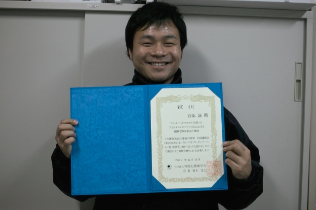
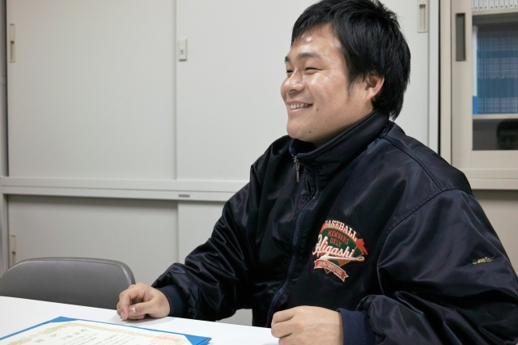
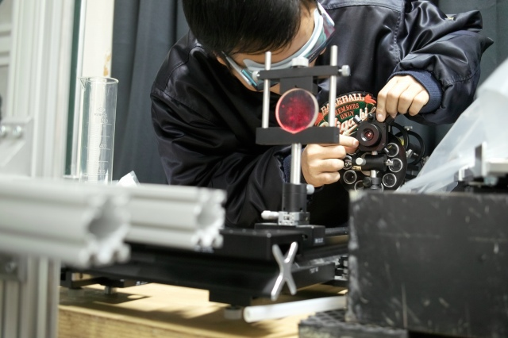

|  |
ディスカッションで生まれたアイデア．すぐに電気店へ買出し． & 学部を終えてから，私は計測研に移りました． ディジタルホログラフィと出会ったのは，このとき．指導教官が，この分野の専門家だったんです．漠然と“光に関する研究”に興味があった私は関心を持ちました． & 取り組む研究テーマ，｢ディジタルホログラフィの3次元観測領域の拡張」には，非常に大きなCCD素子が必要というもの．そこで，現在市販されている最大の素子の大きさを調べるところからスタートしました． & すぐに手に入る素子は，一眼レフに使われる35mm程度のものでした．ある日のディスカッションで，指導教官と，「ラインスキャン，たとえばフラットベッドスキャナが使えるのでは？」ということになり，早速近くの電気店へ買いに行きました． |
|
1台，スキャナをダメにしました． & どうすれば，市販のスキャナでホログラムパターンが撮影できるか．ホログラムの干渉を邪魔する部品を1つずつ外したり，新たに作成した部品をとりつけたり，1ヶ月以上にわたって試行錯誤を重ねました． & ほんとうにいろんなことが起きました．スキャナヘッドが原点位置に戻らない，ホログラムパターンに縦縞が入ってしまう．その度に検討する．手詰まりで，馬鹿げたアイデアも試しました．思い立ってマジックでランプを塗りつぶして，1台，スキャナをダメにしました． & 機器作成の難しさで実感したのは，市販品は別用途に使えるように設計できていないこと．当たり前ですが，限界までコストダウンされた機器は，全ての部品が過不足無く補完しあっています．設計の意図をくみ取り，一部のセンサを無効にすることで，ようやくホログラムパターンが撮影できました． |
 |
|  |
“話す”，“書く”，“読む” & 計測研では，“話す”，“書く”，“読む”を大事にします．とにかく研究はコミュニケーション．自分の考えをプレゼンテーションで“話す”，論文を“書く”．また，他の研究者の考えを論文やテキストから“読む”必要があります． & ようやくホログラムパターンが撮影できた頃，指導教官から「今の内容をまとめて，秋の学会で発表してみませんか？」と“話す”機会を与えられました．人前で“話す”ことに抵抗はありませんが，いざプレゼンテーションを研究室でやってみるとなかなか意図が伝わりません． & どんな聴衆に何を伝えるのか？という視点が無いことに気付くまで，指導教官や研究室のメンバーに練習を付き合って貰いました．今回，受賞という形で，少しはお返しが出来たのかもしれません．まだまだ，研究計画の半分も進んではいません．“話す”，“書く”，“読む”を磨きながら，確実に“夢の3次元コピー機”の実用化を進めていきたいと思います． |
© Measurement System Laboratory, Kyoto Institute of Technology.